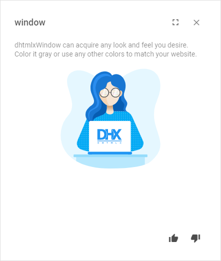
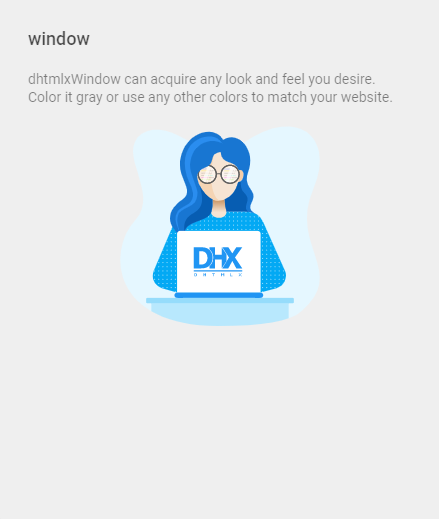

You can customize the look and feel of the header and footer of Window together with their functionality.
dhtmlxWindow uses the Material Design-based icons by default. However, you can use any other icon font pack, if necessary. For this, you need to include the desired icon font on a page and apply icons in any possible part of the window: in the header or the footer.
For example, you can use the Font Awesome icon pack by including link to its CDN after the source files of dhtmlxWindow as follows:
<script type="text/javascript" src="../../codebase/window.js"></script>
<link rel="stylesheet" href="../../codebase/window.css">
<link rel="stylesheet" href="https://use.fontawesome.com/releases/v5.3.1/css/all.css"
integrity="sha384-mzrmE5qonljUremFsqc01SB46JvROS7bZs3IO2EmfFsd15uHvIt+Y8vEf7N7fWAU"
crossorigin="anonymous">
Then you can use the name of the icon as the value of the icon property in the object with the control parameters for the header or the footer. See details below.
Related sample: Window. Custom Icons
It is possible to add any Toolbar controls into the header/footer of a window. You can work with controls in the header/footer of a window in the same way as with Toolbar controls, i.e. add new controls, delete unnecessary ones and update the settings of controls, e.g. labels and icons.
Besides initial controls, you can add other controls into the header/footer on the fly.

For this, you should apply the add method of Data Collection. It takes the parameters below:
dhxWindow.header.data.add({icon: "mdi mdi-fullscreen", id: "fullscreen"}, 2);
dhxWindow.footer.data.add({type: "spacer"});
dhxWindow.footer.data.add({icon: "mdi mdi-thumb-up", id: "like"});
dhxWindow.footer.data.add({icon: "mdi mdi-thumb-down", id: "dislike"})
Related sample: Window. Custom Buttons
You can change the icon of the Window control and its other config options with the help of the update method of Data Collection. It takes two parameters:
dhxWindow.header.data.update("close", {
// using FA icon for the Close button
icon: "fas fa-times"
});
Related sample: Window. Custom Icons
To remove a control from the header/footer, make use of the remove method of Data Collection. Pass the id of the control that should be removed to the method:
dhxWindow.footer.data.remove("accept");
There is a possibility to make changes in the look and feel of a window.

Related sample: Window. Custom Styles
For this you need to take the following steps:
<style>
.my-first-class {
/*some styles*/
}
.my-second-class {
/*some styles*/
}
</style>
var dhxWindow = new dhx.Window({
title: "Window",
css:"my-first-class my-second-class"
});
dhxWindow.show();